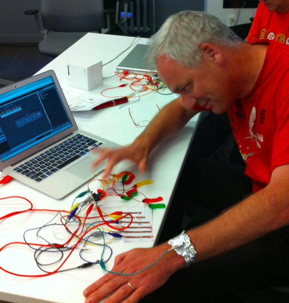

Dit is een uiterst kleine website, die precies voldoet aan de eisen voor een eerste website in 4V.
Het is een website met
Dat is dus de opdracht voor de leerlingen uit 4V, uiterlijk vrijdag 16 november 23:59 uur een website inleveren die aan bovenstaande eisen voldoet. Je kunt een link naar Github sturen, of je files inpakken als zipbestand en dat mailen aan j.montfort@msa.nl
Het is een goede gewoonte je code met
Deze website is gemaakt door Joek van Montfort, docent informatica op het MLA. Als surprise bevat de site ook een handleiding om zelf zo'n site te maken en te publiceren met Github en GithubPages.
